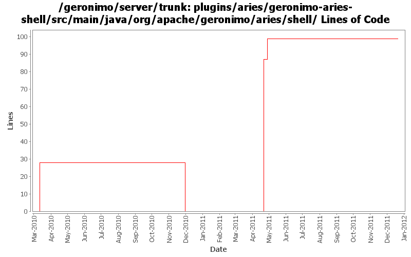

[root]/plugins/aries/geronimo-aries-shell/src/main/java/org/apache/geronimo/aries/shell

| Author | Changes | Lines of Code | Lines per Change |
|---|---|---|---|
| Totals | 22 (100.0%) | 169 (100.0%) | 7.6 |
| gawor | 21 (95.5%) | 166 (98.2%) | 7.9 |
| djencks | 1 (4.5%) | 3 (1.8%) | 3.0 |
GERONIMO-6240 Update to changed jline and moved shell annotations
3 lines of code changed in 1 file:
GERONIMO-5926: Minor improvements to eba:resolve
22 lines of code changed in 1 file:
GERONIMO-5926: Shell command for resolving Aries applications
87 lines of code changed in 1 file:
removing geronimo-aries-shell as it's not used anymore
0 lines of code changed in 6 files:
GERONIMO-5702: Update for Karaf 2.1.2. Based on patch from Viola Lu
1 lines of code changed in 1 file:
synch with latest aries code
28 lines of code changed in 6 files:
GERONIMO-4971: Much improved Aries application support along with Karaf shell commands for installing/uninstalling/starting/stopping/listing applications
28 lines of code changed in 6 files: